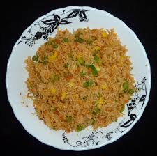

Fried Rice

Description
This is a simple and delicious fried rice recipe with minimal ingredients and cooking steps (Image is not a direct representation of the dish).
credit: https://www.allrecipes.com/recipe/79543/fried-rice-restaurant-style/
Ingredients
- ⅔ cup chopped baby carrots
- ½ cup frozen green peas
- 2 tablespoons vegetable oil
- 1 clove garlic, minced, or to taste (Optional)
- 2 large eggs
- 3 cups leftover cooked and chilled white rice
- 1 tablespoon soy sauce, or more to taste
- 2 teaspoons sesame oil, or to taste
Steps
- Assemble ingredients.
- Place carrots in a small saucepan and cover with water.
Bring to a low boil and cook for 3 to 5 minutes. Stir in peas, then immediately drain in a colander.
- Heat a wok over high heat. Pour in vegetable oil, then stir in carrots, peas, and garlic; cook for about 30 seconds.
Add eggs; stir quickly to scramble eggs with vegetables.
- Stir in cooked rice. Add soy sauce and toss rice to coat.
Drizzle with sesame oil and toss again.
- Serve hot and enjoy!